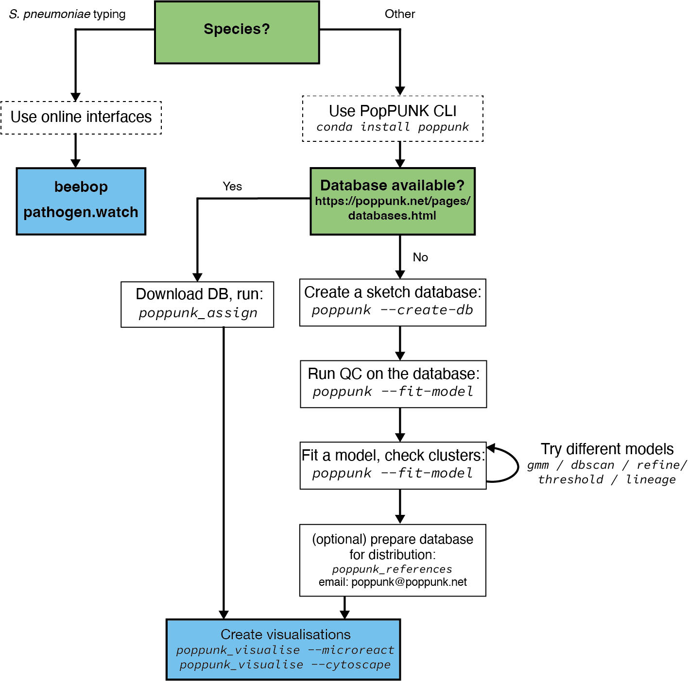

Overview#
This page details the way in which we would advise that you should use and run PopPUNK, if possible.
Use the command line interface#
Installation and version#
Install via conda if possible. Version 2.5.0 of PopPUNK and version 2.0.0 of pp-sketchlib are the current minimum supported versions.
Use query assignment mode#
If a database is available for your species (see https://www.bacpop.org/poppunk/) we would strongly recommend downloading it to use to cluster your genomes. This has many advantages:
No need to run through the potentially complex model fitting.
Assured model performance.
Considerably faster run times.
Use existing cluster definitions.
Use the context of large, high quality reference populations to interpret your genomes’ clusters.
See Query assignment (poppunk_assign) for instructions on how to use this mode.
You can think of this as being similar to using an existing MLST/cgMLST/wgMLST scheme to define your sample’s strains.
Fit your own model#
If a database isn’t available for your species, you can fit your own. This consists of three steps:
Sketch your genomes (see Sketching (--create-db)).
Quality control your database (see Data quality control (--qc-db)).
Fit a model (see Fitting new models (--fit-model)).
Repeat step two, until you have a model which works for your needs.
After getting a good fit, you may want to share it with others so that they can use it to assign queries. See Distributing PopPUNK models for advice. We would also be interested to hear from you if you’d like to add your new model to the pre-fit databases above – please contact poppunk@poppunk.net.
Create visualisations#
A number of plots are created by default. You can also create files for further visualisation in microreact, cytoscape, grapetree and phandango. We have found that looking at the appearance of clusters on a tree is always very helpful, and would recommend this for any fit.
Older versions of PopPUNK mandated this be chosen as part of the main analysis,
and then with --generate-viz mode. This is now run separately, after the
main analysis, with poppunk_visualise.
See Creating visualisations for details on options.
Use an online interface#
If available, you may want to use one of the browser-based interfaces to PopPUNK. These include beebop and pathogen.watch (S. pneumoniae only).
Using these interfaces requires nothing to be installed or set up, doesn’t require any genome data to be shared with us, and will return interactive visualisations. If your species isn’t available, or you have large batches of genomes to cluster you will likely want to use the command line interface instead.